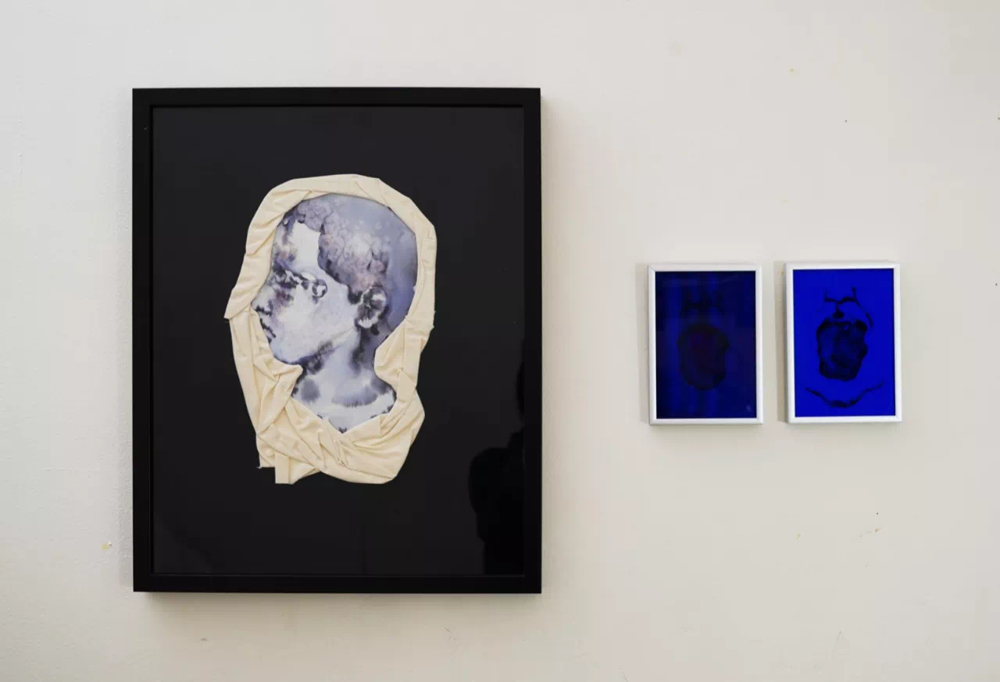
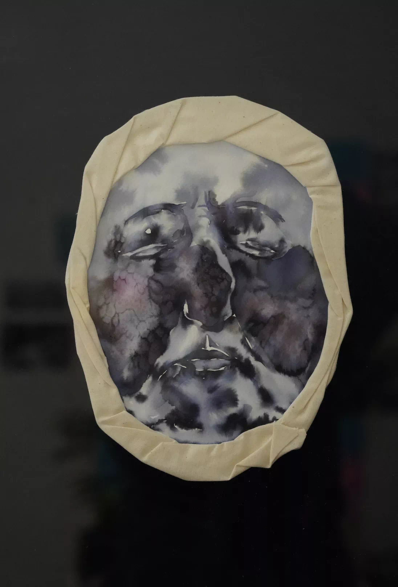

聊聊艺术的“那几个点” | 周雯静 「艺术访谈」
欢迎来到木牙Make Unique Young Arts，这周我们来聊聊医学与艺术～
身份，身体，性别，疾病，权力，这几个词连接着我们一生（一身）最关注的几个敏感点。我们无法无视和脱离他们。我们需要努力的去认识和理解并且接受这些围绕着我们的敏感点。
Identity, body, gender, disease, power -- these are the words that connect the most sensitive points of our lives. We cannot ignore them and disengage from them. We need to make an effort to recognize and understand and accept these sensitive points that surround us.
这些敏感点在我们生命的不同时刻划出了不同的烙印，我们对于它们有着深刻且私密的记忆。我们无法正常开口诉说，或者说我们潜意识里选择回避不谈。
These sensitive points are stamped on us at different times in our lives, and we have deep and intimate memories of them. We keep it a secret, or we subconsciously choose not to talk.
而今天我们有幸邀请周雯静到来到木牙MUYA和我们聊聊她是如何理解这几个点，为什么要讨论它们并且是如何将它们用不同的艺术形式表现出来的？
And today we are honored to have Wenjing Zhou come to Muya and talk with us about how she understands these points, and how she expresses them in different artistic forms.
周雯静，出生于湖南，硕士毕业于法国南特美院，现工作、生活于巴黎和北京。她的作品曾在法国巴黎Ovision画廊,成都何多苓美术馆，北京今日美术馆，韩国平昌冬奥会媒体艺术项目，苏州金鸡湖美术馆，北京亚洲现场艺术中心等展出。
Wenjing Zhou, born in HuNan, graduated from School Fine Arts De Nantes Saint-Nazaire. She worked and lived in Paris and Beijing. Her works exhibited at Gallery Ovision at Paris in France, Heduoling art gallery in Chengdu, Today art museum in Beijing, PyeongChang Olympic Media Art project in Korea, Asia Scene Art Space in Beijing.

我关注身份，性别，身体，疾病，权力等问题。从个人经验出发以微观历史的角度生产与介入有关情感与物、权力与异化、个人与公共，以及有关身份、时代、社会伦理、地缘政治等问题。
I am concerned about identity, gender, body, disease, power. Starting from personal experience and methodology of micro history, production and involved in the emotional and physical power, and alienation, personal and public, as well as the identity, age, social ethics, discuss the geopolitical issues.

➤ 木牙MUYA: 2020年末了，目前有在研究什么新课题？2021年有什么新的计划？疫情隔离期间有做些什么有趣的事情吗？
In 2020, What new topics are you working on? Did you do anything interesting during the quarantine?
Wenjing: 红色系列的创作对于我来说已经告一段落了，目前我关注的话题是医学和艺术的关系。关于“临床艺术”，我并没有野心想创造一个词，实际上我做了很多的解释，并不是因此想要通过艺术介入临床的治疗研究，而是以观看方式，探索医学的目视和艺术目视的交汇点。
“增生”是《以疾病之名》系列的第二个作品，与“乳腺增生”与“乳腺癌”这些刺眼的名词相关，这件作品不只是一个形式上的改变，从颜色上都比较偏向于蓝，其实作品本身是黑白的，可能是通过网络传播的原因它显得像是藏青色。
“以疾病之名”这个作品想法的来源是在2019年年底，我在巴黎参观了一个家附近的圣路易综合医院的博物馆，这个博物馆里展出了从17到19世纪所有皮肤病的蜡制翻模，那个时候，还没有摄影技术，所有的模型都是通过在病人身体上、脸上筑模和翻制出来。其实是很惊悚的，而且他们并不允许拍照，所以我会在那边画一些手稿进行记录。在那样的时代，这些病人肖像被展示供人观看，但下面写着的却是他们所得疾病的名字。他们穿着疾病之衣，被疾病命名。疾病是更麻烦的一种公民身份。
The creation of the red series has come to an end for me, and my current topic is the relationship between medicine and art. In terms of "clinical art", I have no ambition to invent a term. In fact, I have made a lot of explanations, not so much that I want to intervene in clinical therapeutic research through art, but to explore the intersection of medical and artistic vision in a visual way.
"Hyperplasia" is "in the name of disease," the second series, with "mammary gland hyperplasia associated with these dazzling term" breast cancer ", the work is not only a form of change, is biased towards the blue from the color, actually work itself is black and white, can be spread through the network because it looks like navy.
"In the name of disease," the source of the work idea is at the end of 2019, I visited a nearby in Paris saint Louis general hospital museum, the museum from 17 to 19 century all skin wax mold, at that time, no photography, all models are with mold on the patient's body, face up and turn out. It's really scary, and they're not allowed to take pictures, so I'm going to draw some manuscripts over there to record it. In those days, portraits of patients were displayed for viewing, but underneath were written the names of their diseases. They wear the clothes of disease and are named by disease. Illness is a more troublesome form of citizenship.
➤ 木牙MUYA: 雯静最近有看到哪些有趣的书籍，可以给我们推荐几本吗？
What interesting books have you seen recently? Can you recommend some to us?
Wenjing:去年我最喜欢的一本书，是约瑟夫•博伊斯的《什么是艺术》，2019年新版，值得细读。博伊斯是当代艺术中不得不提及并且很重要的艺术家。还有一本是列维•斯特劳斯的《忧郁的热带》，这本书开启了我对结构主义人类学的兴趣。
One of my favorite books last year was Joseph Boyce's What Is Art, the 2019 edition of which is worth perusing. Boyce is an important and indispensable artist in contemporary art. Another was Levi Strauss's Tristes Tropique, which started my interest in structuralist anthropology.

➤ 木牙MUYA: 雯静的作品早期关注于女性视角以红色为主色。红色让人联想到血，月事等深入人心的事情。而作为中国人红色也有着特别的含义。也是最早出现的颜色之一。在公共标签中，红色代表女性，蓝色代表男性，对于这件事情你是怎么理解的？
Wen Jing's early works focus on the female perspective with red as the main color. Red reminds people of blood, moon events and other things deeply rooted in the heart. As a Chinese, red also has a special meaning. It was one of the first colors to appear. In public labels, red represents women and blue represents men. What do you think about this?
Wenjing:“红色代表女性，蓝色代表男性”这样的颜色代指相对简单粗暴了，其实颜色背景的复杂性和政治文化都相关，甚至和语言学也相关。我现在也在画些小稿子，也很想研究色彩，但不是研究其象征意义或标示意义，而是感受性的方面。比如说我会比较注重使用蓝色，红色和黄色，这三个颜色之间的关系，在我过去的实验中，利用不同的明度饱和度使他们的组合具有暴力性。在我的绘画中，我喜欢用一种“矛盾法”，就是看上去很美，但是内容却是很暴力的，我很喜欢这样的一种内在的矛盾感。其实关于色彩，很多很漂亮的色彩组合到一起，却有一种很不舒服的感觉。在颜色方面，我更注重的是一种感受，一种说不清楚的暧昧感。
"Red for female, blue for male" is a relatively crude color representation, but the complexity of the color background is related to politics and culture, and even to linguistics. I am also working on small sketches now, and I am also interested in studying color, not in its symbolic or symbolic meaning, but in its sensual aspect. For example, I would focus on the relationship between blue, red, and yellow, and in my past experiments, I used different lightness saturation to make their combinations violent. In my paintings, I like to use a kind of "contradiction", that is, it looks beautiful, but the content is very violent. I like this kind of inner contradiction. In fact, about the color, a lot of very beautiful color combination together, but there is a very uncomfortable feeling. In the aspect of color, what I pay more attention to is a kind of feeling, a kind of ambiguous feeling that cannot be explained clearly.

➤ 木牙MUYA: 现在“独立女性”这一词被广泛提及甚至滥用，这一现象是否表示女性的社会地位已经得到了最大限度的改善或者说女性是社会的主要群体已经成为事实。雯静对于“独立女性”这个词汇是如何思考的呢?
Nowadays, the term "independent women" is widely mentioned and even abused. Does this phenomenon indicate that women's social status has been greatly improved or that women are the main group in society has become a fact? How does Wen Jing think about the term "independent woman"?
Wenjing:“独立女性”首先要是独立的人，需要物质和精神的独立，更重要的是精神上的独立。今天看来，要广泛达到这样的标准还是很难。如果一定要说的话，我想今天的女性运动中最应该争取的是对这个世界的诠释权。同样我认为艺术家拥有的最大的权力，就是对这个世界的诠释权。这个话题让我想到了我的一个作品《权力词典》，是我很喜欢的一个作品，我就是编著了一本我个人的词典，我把所有和权力相关的词汇收集了起来，然后我自己给它们一个解释，并且按照字母表，把这些词排列成一本词典，用以行使我对这个世界的诠释权。
"Independent women" are, first of all, independent people, who need to be independent in material and spirit, and more importantly, in spirit. Today, it seems difficult to meet such standards broadly. If I have to say anything, I think what the women's movement needs to fight for today is the right to interpret the world. In the same way, I think the greatest power an artist has is the right to interpret the world. This topic reminds me of one of my works from the dictionary of power, is a work I like, I just compiled a my personal dictionary, I put all the power and relevant vocabulary collected, and then I give them an explanation, and according to the alphabet, arrange these words in a dictionary, to exercise my interpretation of the world.
➤ 木牙MUYA: 在社会公共对于女性的认知中，女性思维倾向于感性，男性思维倾向于理性，对此您是怎样看待感性和理性这样的情感占比的呢？
In the public cognition of women, female thinking tends to be sensible, while male thinking tends to be rational. How do you view the proportion of emotion as sensible and rational?
Wenjing:这个感性与理性的理论在丹尼尔•卡尼曼的行为心理学里读到过，但“女性思维倾向于感性，男性思维倾向于理性”这个更像是一个伪命题，或是一种成见。理性和感性在我看来是相生的，相辅相成的关系，比如说庄子。我认为一个高度理性的人，感性能力一定不低。相反不理性的人，也不一定有感性的能力。常见的情绪化，但并不能称之为感性，“情绪化”和“感性”是容易被误解的两个词汇。
This sensible versus rational theory was read about in Daniel Kahneman's Behavioral Psychology, but the notion that women tend to think emotionally and men tend to think rationally is more of a pseudo-proposition or stereotype. Rationality and sensibility, in my opinion, are mutually generated and complementary to each other, such as Zhuangzi. I think a highly rational person must not be low in sensible capacity. On the contrary, people who are not rational are not necessarily capable of feeling. "Emotional" and "Sensible" are two words that are easily misunderstood.
➤ 木牙MUYA: 我曾经有看到过一个词叫“伤痛艺术”， 他的解释也很简洁，是说以伤痛为主要艺术表现形式。艺术通过痛感的情感知觉唤醒人的更深层情感意识，我很好奇在您的艺术创作的过程中，您觉得痛感对于艺术的意义与价值是怎样的呢？
I once saw a word called "the art of pain". His explanation is also very concise, which means taking pain as the main form of artistic expression. Art awakens people's deeper emotional awareness through the emotional perception of pain. I am very curious about the significance and value of pain to art in your artistic creation process.
Wenjing:我想表达的疼痛不是拿刀子割给你看的那种感觉。我想表达的是更深层次的疼痛。其实很多人看到我节育环的那个作品，都有一种疼痛的感觉。生理上的和心理上的。我只是在记录一件我们母亲这一代人，或这一代人，都不愿被提起或是讲诉的话题，节育环更像一种发生在过去故事，一个历史敏感点。“增生”的作品来源于医学上的乳腺钼靶（乳腺钼靶X线摄影检查），这个拍摄的过程是非常疼痛的过程，身体被物化的过程和疼痛都是作品的背后支撑。
The pain I'm trying to convey is not the feeling of holding a knife to show you. I'm talking about a deeper level of pain. In fact, many people have a feeling of pain when they see the work of my IUD. Physical and psychological. I'm just documenting a topic that my mother's generation, or my generation, doesn't want to talk or discuss about. IUD is more of a story from the past, a historically sensitive point. The work of "hyperplasia" comes from the medical mammography of the breast (mammography of the breast). The photographing process is a very painful process. The process of the body being materialized and the pain are the support of the work.

➤ 木牙MUYA: 作品《红色系列 N°6》对于《女人系列∙节育环》作品的重新创作，使用的材料分别是陶瓷和铜。在材料选择上，您能跟我们聊聊您对不同材料应用的一些经验吗？
"Red Series N°6" is a re-creation of the work "Woman Series ∙ IUD", using ceramic and copper respectively. In terms of material selection, could you tell us about your experience in applying different materials?
Wenjing:我的创作非常缓慢，常常会回头思考之前作品中的问题，在摇摆不定的状态中，调整，慢慢往前走。之后重新创作了“节育环”这个作品，我对之前那个作品中的讽刺意味不是特别满意，而想要把注意力转移到“嵌入”身体的疼痛感。我找到一种当地的低温陶瓷，因为烧制出来摸起来很像人的皮肤质感，然后把节育环嵌入瓷片中再取出，留下了一个“疼痛”的痕迹，并把这些瓷片烧制成永恒的印记。在展览的过程中，我往这个节育环的负空间中注入红色墨水，展览的过程中，墨水很快就干掉，形成了一个个深红的痕迹。当这两件节育环的作品放置在一起展览的时候，产生了一个有趣的对话，一个是实体，一个是虚空。
My creation is very slow. I often look back and think about the problems in previous works. In a state of uncertainty, I adjust and move forward slowly. Later, I re-created the work of "IUD". I was not particularly satisfied with the irony in the previous work, but wanted to focus on the pain "embedded" in the body. I found a local low-temperature ceramic, because it feels like human skin, and then I inserted the IUD into the tile and took it out, leaving a "pain" mark, and burned these tiles into a permanent mark. During the exhibition, I injected red ink into the negative space of the IUD. During the exhibition, the ink dried out quickly and formed dark red marks one by one. When these two works of IUD were displayed together, an interesting dialogue occurred: one is the entity, the other is the void.
➤ 木牙MUYA: 雯静认为艺术有什么样的功能，在你看来，艺术和设计又有怎样的区别呢？
What function does Wenjing think art has, and in your opinion, what is the difference between art and design?
Wenjing:我认为艺术家是发现问题，提出问题的那个人，他们既不是医生也不是记者，他们不一定有能力解决甚至并不知道问题的准确答案。艺术只是提出一个问题，但是看到这些问题的人，其实是会试图去寻找和解答的。好的艺术作品提出一个问题，直指人心。其实这也是艺术和设计逻辑上的区别，艺术是提出一个问题，设计是给你一个答案。
In my opinion, artists are the ones who find problems and ask questions. They are neither doctors nor journalists. They are not necessarily capable of solving problems or even don't know the exact answers. Art only asks a question, but the person who sees the question tries to find and answer it. Good art asks a question that speaks to the human heart. In fact, this is also the logical difference between art and design, art is to ask a question, design is to give you an answer.

✯ Which inspire your works most ✯
“今天的艺术需要除魅”
木牙微信订阅号